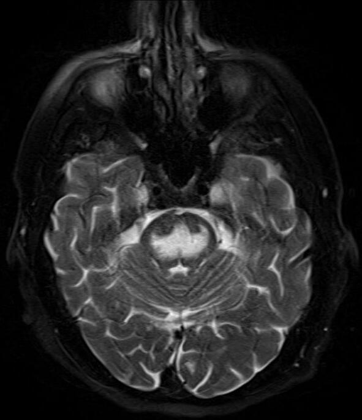

When you first start learning MRI, one of the most common questions is:
How do I know whether an MRI image is T1-weighted or T2-weighted?
The answer becomes much easier once you understand what T1 and T2 actually represent.
T1 → fat is usually bright, fluid is dark
T2 → fluid is usually bright
But there is a little more to it than memorizing these two lines. Let’s break it down.
First, what do T1 and T2 mean?
T1 and T2 are relaxation times of hydrogen nuclei after they have been disturbed by the radiofrequency (RF) pulse used during MRI.
After the RF pulse, the protons gradually return toward their equilibrium state. Two important processes occur during this recovery:
- T1 relaxation — recovery of longitudinal magnetization.
- T2 relaxation — loss of transverse magnetization due to interactions between spins.
Different tissues have different T1 and T2 relaxation characteristics. MRI sequences can be designed to make one of these differences contribute more strongly to the image contrast. That is why the same tissue can look different on different MRI sequences.
So, T1- and T2-weighted images are not two different types of MRI machines.
They are different ways of acquiring MRI images to emphasize different tissue characteristics.
T1-weighted MRI
T1-weighted images are particularly useful for looking at anatomy and structural detail.
The easiest feature to recognize is:
Fat → bright
Simple fluid → dark
For example, the cerebrospinal fluid (CSF) in the brain is dark on a typical T1-weighted image, while fat is relatively bright.
This makes T1-weighted images useful when you want a good anatomical overview.
What does a T1-weighted brain image look like?
In a typical brain T1 image:
- White matter → relatively brighter
- Gray matter → relatively darker
- CSF → dark
- Fat → bright
So if you are looking at a brain MRI and the CSF in the ventricles looks dark, T1 becomes a strong possibility.

T2-weighted MRI
T2-weighted images give greater emphasis to differences related to T2 relaxation.
The easiest feature to recognize is:
Fluid → bright
Water-rich tissues and fluids such as CSF have relatively long T2 relaxation times, so they appear bright on T2-weighted images.
This is one reason T2-weighted imaging is very useful for detecting many abnormalities associated with increased water content, such as edema, inflammation, and fluid-containing lesions.
In a typical brain T2 image:
- CSF → bright
- Gray matter → relatively brighter than white matter
- White matter → relatively darker than gray matter
- Fat → can also remain relatively bright unless fat suppression is used
So if you see bright CSF, you are likely looking at a T2-weighted image.
The easiest way to tell T1 and T2 apart
If you are given an MRI image and asked:
“Is this T1 or T2?”
Don't try to memorize every tissue first.
Look for fluid.
A very useful example is CSF in the brain.
| Feature | T1-weighted | T2-weighted |
|---|---|---|
| CSF / simple fluid | Dark | Bright |
| Fat | Bright | Often bright |
| White matter | Relatively brighter | Relatively darker |
| Gray matter | Relatively darker | Relatively brighter |
| Main visual strength | Anatomy / structural detail | Fluid and many abnormalities |
This is a simplified comparison of typical conventional images. Actual appearance can change depending on the sequence and additional techniques used.
Why does fluid behave differently?
This is where the names T1 and T2 become more meaningful.
Water-rich tissues generally have long T1 and T2 relaxation times.
On a T1-weighted image, tissues with shorter T1 values recover their longitudinal magnetization more quickly and tend to produce higher signal. Fat has a relatively short T1, so it appears bright.
Water has a relatively long T1, so it appears dark on a T1-weighted image.
On a T2-weighted image, tissues with longer T2 values retain transverse magnetization for longer and therefore tend to remain brighter at the time the signal is measured.
Free or relatively mobile water has a long T2, which is why fluid such as CSF appears bright on T2-weighted images.
You don't need to memorize the physics in detail at first.
For everyday image identification, remember:
T1: short T1 → brighter
T2: long T2 → brighter
A simple example: CSF
Imagine looking at the ventricles of the brain.
They contain cerebrospinal fluid (CSF).
On T1:
CSF appears dark.
On T2:
CSF appears bright.
That single observation can often help you quickly distinguish between the two.
This is why students are often taught to look for fluid first when identifying an MRI sequence.
What are T1 images mainly useful for?
T1-weighted imaging provides strong anatomical contrast and is commonly used when detailed structural information is important.
It can be particularly useful for:
- Evaluating normal anatomy
- Assessing the relationship between different soft tissues
- Characterizing fat-containing structures
- Providing a baseline anatomical image
- Evaluating post-contrast enhancement when gadolinium contrast is used
T1-weighted images are therefore an important part of many MRI protocols.
But T1 does not mean that every abnormality will automatically appear bright or dark in a predictable way. The appearance of pathology can depend on its composition, timing, sequence parameters, and whether contrast or other techniques are used.
What are T2 images mainly useful for?
T2-weighted imaging is especially useful when you want to make water-related changes more visible.
Increased water content can occur in conditions involving:
- Edema
- Inflammation
- Many tumors or tumor-associated changes
- Some infections
- Fluid collections
- Tissue injury
This is why T2-weighted imaging is often described as being fluid-sensitive.
For example, edema may appear bright on T2-weighted images because of its increased water content.
However, a bright area on T2 does not automatically mean that the patient has a particular disease. Signal intensity must always be interpreted together with the anatomy, other sequences, clinical history, and the radiologist's assessment.
What about fat on T2?
This is an important point because students sometimes learn:
“T1 = fat bright, T2 = fat dark.”
That is not a reliable general rule.
In a conventional T2-weighted image, fat can also appear relatively bright. This can make it harder to distinguish some fluid-related abnormalities from surrounding fat.
That is why MRI can use fat-suppression techniques.
What is T2 fat-sat?
T2 fat-sat means a T2-weighted image in which the signal from fat has been deliberately suppressed.
The result is useful because:
Fluid → stays bright
Fat → becomes dark
This creates a strong contrast between fluid or edema and the surrounding fatty tissue.
For example, if there is edema within soft tissue, suppressing the surrounding fat can make the edema much easier to see. T2 fat-suppressed sequences are therefore commonly used when looking for fluid-sensitive abnormalities.
So:
This is one reason you may see T2 images that look different from the simple T1-versus-T2 examples you learned initially.

And what is FLAIR?
You may also come across FLAIR, especially in brain MRI.
FLAIR stands for:
It is essentially a T2-weighted type of sequence in which the signal from CSF is suppressed.
So instead of:
T2 → CSF bright
FLAIR gives:
FLAIR → CSF dark
while many abnormal areas with increased water content can remain bright.
This is useful in brain imaging because very bright CSF on a conventional T2 image can sometimes make abnormalities near the ventricles or cortical surface harder to appreciate.
A useful way to remember it is:
T2: fluid is bright
FLAIR: CSF is suppressed and becomes dark
FLAIR should therefore not be confused with a basic T1-weighted image just because the CSF looks dark. Looking at the gray-white matter relationship and the overall sequence appearance helps distinguish them.
T1 vs FLAIR — Why Can They Look Similar?
The main clue is not CSF.
On both conventional T1-weighted images and FLAIR:
- CSF → dark
- So simply seeing dark CSF does not tell you whether an image is T1 or FLAIR.
Instead, look at the gray matter and white matter:
T1-weighted:
- White matter → relatively bright
- Gray matter → relatively darker
- CSF → dark
FLAIR:
- CSF → dark
- Gray matter → relatively brighter than white matter
- Many water-rich abnormalities → bright
So a useful student trick is:
T1: white matter is brighter than gray matter.
FLAIR: gray matter is brighter than white matter, while CSF is suppressed.
And there's an even more useful point: FLAIR is essentially a T2-based sequence with CSF suppression, so abnormalities with increased water content can remain bright even though the CSF has been made dark.
Quick comparison
| Feature | T1 | FLAIR |
|---|---|---|
| CSF | Dark | Dark |
| White matter | Relatively bright | Relatively darker |
| Gray matter | Relatively dark | Relatively brighter |
| Water-rich abnormalities | Variable | Often bright |
| Main clue | White matter > gray matter | CSF dark + fluid-sensitive abnormalities bright |
One caution: these are practical recognition rules for typical brain MRI appearances. Exact signal depends on the sequence parameters and pathology.
T1 vs T2 after contrast
Another common source of confusion is contrast-enhanced T1 imaging.
Gadolinium-based contrast agents can change the signal intensity of tissues on T1-weighted images, particularly in areas where the contrast agent accumulates.
This means you may see a bright structure on a post-contrast T1 image that was not bright in the same way on the pre-contrast image.
So when you see:
“T1 post-contrast”
it means the image is T1-weighted, but acquired after administration of a gadolinium-based contrast agent.
It is not a completely different “type of T1.”
The comparison of pre- and post-contrast images can provide important information, depending on the clinical situation.
A quick visual trick for students
When you're practicing MRI image identification, try this order:
Step 1 — Find the fluid
Look for CSF, urine, or another obvious fluid-filled structure.
Step 2 — Check its brightness
Fluid dark? → Think T1
Fluid bright? → Think T2
Step 3 — Look at the brain, if available
On typical brain images:
T1: white matter is brighter than gray matter.
T2: gray matter is brighter than white matter.
Step 4 — Check whether fat suppression is being used
If fat looks dark while fluid remains bright, you may be looking at a T2 fat-suppressed or similar fluid-sensitive sequence.
This approach is usually more useful than trying to identify an MRI sequence from one tissue alone.
One important limitation
The rules in this article are helpful identification rules, not universal laws for every MRI image.
MRI has many different pulse sequences and modifications. Parameters such as TR (repetition time) and TE (echo time) influence whether an image is predominantly T1- or T2-weighted, while techniques such as fat suppression, inversion recovery, diffusion weighting, and contrast enhancement can substantially change tissue appearance.
So if an image doesn't perfectly match the simple T1/T2 table, that doesn't necessarily mean the image is wrong.
It may simply be a modified or differently weighted sequence.
The easiest way to remember it
If you remember only two things from this article, remember these:
T1 → Fat bright, fluid dark
T2 → Fluid bright
And one extra point:
T2 does NOT automatically mean fat is dark.
If you see bright fluid + dark fat, think about a fat-suppressed T2-type sequence.
Quick recap
| Feature | T1-weighted | T2-weighted |
|---|---|---|
| Fluid | 🔵 Dark | 🔵 Bright |
| Fat | 🟡 Bright | 🟡 Often bright |
| White matter | Relatively bright | Relatively dark |
| Gray matter | Relatively dark | Relatively bright |
| Common strength | Anatomy | Fluid-sensitive abnormalities |
| Easy clue | Dark CSF | Bright CSF |
MRI becomes much easier once you stop trying to memorize every image and start looking for patterns.
The next time you see an unfamiliar MRI, first ask yourself:
“Where is the fluid, and is it bright or dark?”
That simple question can often give you your first clue about whether you're looking at T1 or T2.
Sources & Further Reading
-
National Institute of Biomedical Imaging and Bioengineering (NIBIB)
— Magnetic Resonance Imaging (MRI)
Basic MRI principles and clinical applications. -
Postgraduate Medical Journal
— Clinician’s guide to the basic principles of MRI
T1/T2 weighting, FLAIR, fat suppression and MRI basics. -
NCBI/PMC
— Selecting Neuroimaging Techniques: A Review for the Clinician
Comparison of T1, T2 and FLAIR brain MRI appearances. -
NCBI Bookshelf
— Magnetic Resonance Imaging
MRI physics, T1/T2 relaxation and image weighting.